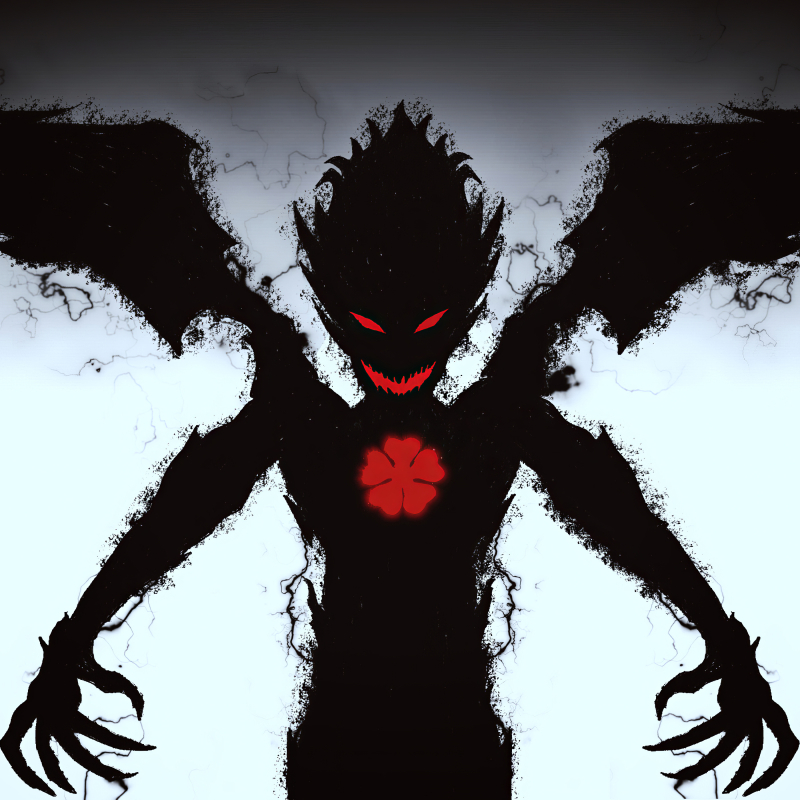

Arcos principais

- Seleção dos Cavaleiros Mágicos
Asta e Yuno se juntam aos esquadrões e iniciam suas jornadas.
- Confronto com o Olho do Sol da Meia-Noite
Um grupo misterioso que tenta destruir o Reino Clover, mas tem ligações com elfos antigos.
- Arco dos Elfos
Revelações sobre reencarnações e o massacre dos elfos. Grandes batalhas entre os Cavaleiros e os elfos possuídos.
- Arco do Reino Coração
Asta e os outros treinam com novos aliados para ficarem mais fortes contra os demônios.
- Arco do Reino Spade
Começa a guerra contra o Reino Spade e os Tríade Negra, que usam magia demoníaca.
Novas transformações e segredos dos demônios aparecem.